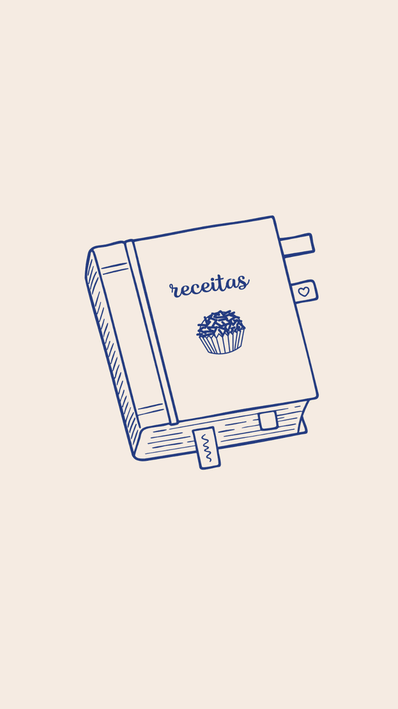
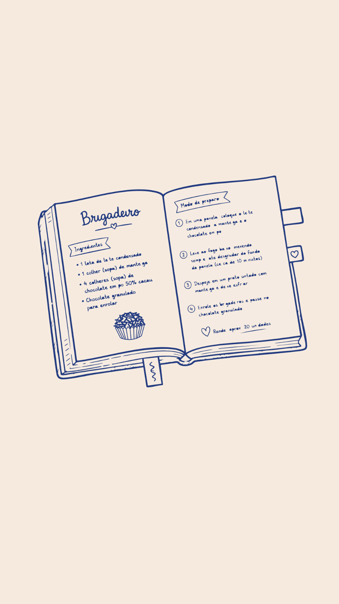

<!DOCTYPE html>
<html lang="pt-BR">
<head>
<meta charset="utf-8">
<meta name="viewport" content="width=device-width,initial-scale=1">
<title>Moça Lovers · Painel da comunidade</title>
<link rel="preconnect" href="https://fonts.googleapis.com">
<link rel="preconnect" href="https://fonts.gstatic.com" crossorigin>
<link href="https://fonts.googleapis.com/css2?family=Nunito:ital,wght@0,400;0,600;0,700;0,800;0,900;1,400&family=Grand+Hotel&display=swap" rel="stylesheet">
<script src="https://cdn.jsdelivr.net/npm/chart.js@4.4.1/dist/chart.umd.min.js"></script>
<style>
:root{
  --navy:#243C82;--navy2:#1B2F6A;--navy3:#2E4A9E;--sky:#3E9ACC;--terra:#B0522E;
  --cream:#F6ECE2;--cream2:#FBF6F0;--sand:#EFE0CF;--sand2:#E4D3BE;
  --gold:#C99A3E;--gold2:#A87B2A;--gold3:#E8C86A;
  --ink:#243C82;--ink2:#4B5B86;--mut:#7C8AAE;--white:#fff;
  --r:20px;--r2:12px;
}
*{box-sizing:border-box;margin:0;padding:0}
html{scroll-behavior:smooth;-webkit-text-size-adjust:100%}
body{font-family:'Nunito',system-ui,sans-serif;background:var(--cream);color:var(--ink);line-height:1.5;-webkit-font-smoothing:antialiased;overflow-x:hidden}
a{color:var(--navy)}
b,strong{font-weight:800}
.wrap{max-width:1180px;margin:0 auto;padding:0 20px}
.script{font-family:'Grand Hotel',cursive;font-weight:400}
.ey{font-size:12px;font-weight:800;letter-spacing:.22em;text-transform:uppercase;color:var(--gold2)}
.ey.light{color:var(--gold3)}
.mut{color:var(--mut)}

/* ---- top band ---- */
.band{background:var(--navy);color:var(--cream);position:relative;overflow:hidden}
.band .wrap{position:relative;z-index:1}
.top{display:flex;align-items:center;justify-content:space-between;gap:18px;padding:22px 0 10px;flex-wrap:wrap}
.brand{display:flex;align-items:center;gap:14px}
.brand img{height:56px;width:auto}
.brand .t1{font-size:26px;font-weight:900;letter-spacing:-.02em;line-height:1}
.brand .t1 i{font-family:'Grand Hotel',cursive;font-style:normal;font-weight:400;font-size:34px;color:var(--gold3);margin-left:6px}
.brand .t2{font-size:12.5px;letter-spacing:.18em;text-transform:uppercase;opacity:.75;margin-top:6px;font-weight:700}
.stamp{text-align:right;font-size:13px}
.stamp .pill{display:inline-flex;align-items:center;gap:8px;border:1.5px solid rgba(246,236,226,.35);border-radius:999px;padding:7px 14px;font-weight:800}
.stamp .pill i{width:8px;height:8px;border-radius:50%;background:var(--gold3);display:inline-block}
.stamp .src{opacity:.7;margin-top:6px}
.hero{display:grid;grid-template-columns:1.2fr .8fr;gap:34px;align-items:center;padding:30px 0 130px}
.hero .sc{font-family:'Grand Hotel',cursive;font-size:38px;color:var(--gold3);line-height:1}
.hero h1{font-size:clamp(36px,4.8vw,62px);font-weight:900;line-height:1.0;letter-spacing:-.03em;text-wrap:balance;margin:6px 0 18px}
.hero p{font-size:17.5px;line-height:1.55;max-width:60ch;opacity:.95}
.hero p b{color:var(--gold3)}
.hero .art{position:relative;height:340px;border-radius:var(--r);overflow:hidden;background:var(--navy2);box-shadow:0 40px 70px -40px rgba(0,0,0,.6)}
.hero .art img{position:absolute;inset:0;width:100%;height:100%;object-fit:cover;object-position:62% center}
.hero .art .cap{position:absolute;left:16px;bottom:14px;background:rgba(27,47,106,.88);color:var(--cream);border-radius:999px;padding:7px 14px;font-size:12.5px;font-weight:800;letter-spacing:.1em;text-transform:uppercase}
.band:after{content:"";position:absolute;right:-140px;top:-140px;width:480px;height:480px;border-radius:50%;background:radial-gradient(circle,rgba(232,200,106,.16),transparent 70%)}

/* ---- kpis ---- */
.kpis{display:grid;grid-template-columns:repeat(3,1fr);gap:14px;margin-top:-92px;position:relative;z-index:2}
.kpi{background:var(--cream2);border-radius:var(--r);padding:20px 18px 16px;box-shadow:0 22px 44px -26px rgba(36,60,130,.5);border:1px solid var(--sand);position:relative;overflow:hidden}
.kpi:before{content:"";position:absolute;left:0;top:0;bottom:0;width:5px;background:var(--ac,var(--gold))}
.kpi .kl{font-size:11.5px;font-weight:800;letter-spacing:.16em;text-transform:uppercase;color:var(--ink2)}
.kpi .kv{font-size:34px;font-weight:900;letter-spacing:-.03em;line-height:1.05;margin:8px 0 4px;color:var(--navy)}
.kpi .ks{font-size:13px;color:var(--ink2)}
.kpi .kb{display:inline-block;margin-top:10px;font-size:11.5px;font-weight:800;border-radius:999px;padding:4px 10px;background:var(--sand);color:var(--navy)}
.kpi .kb.gold{background:var(--gold3);color:var(--navy2)}

/* ---- sticky nav ---- */
.navwrap{position:sticky;top:0;z-index:20;background:rgba(246,236,226,.9);backdrop-filter:blur(10px);border-bottom:1px solid var(--sand2);margin-top:22px}
.nav{display:flex;gap:6px;overflow-x:auto;padding:10px 0;scrollbar-width:none}
.nav::-webkit-scrollbar{display:none}
.tab{flex:0 0 auto;border:1.5px solid transparent;background:transparent;color:var(--navy);font:800 14px 'Nunito',sans-serif;padding:9px 16px;border-radius:999px;cursor:pointer;text-decoration:none;transition:.15s}
.tab:hover{border-color:var(--sand2);background:var(--cream2)}
.tab.on{background:var(--navy);color:var(--cream)}

/* ---- sections ---- */
section.sec{padding:54px 0 10px;scroll-margin-top:70px}
.sechd{display:grid;grid-template-columns:1fr auto;gap:18px;align-items:end;margin-bottom:18px}
.sechd .sc{font-family:'Grand Hotel',cursive;font-size:34px;color:var(--gold2);line-height:1}
.sechd h2{font-size:clamp(28px,3.4vw,40px);font-weight:900;letter-spacing:-.03em;line-height:1.05;text-wrap:balance}
.sechd .lead{font-size:16px;color:var(--ink2);max-width:62ch;margin-top:8px}
.sechd .num{font-size:12px;font-weight:800;letter-spacing:.2em;color:var(--mut);text-transform:uppercase}

/* ---- cards ---- */
.card{background:var(--cream2);border:1px solid var(--sand);border-radius:var(--r);padding:22px;box-shadow:0 12px 34px -26px rgba(36,60,130,.4)}
.card.navy{background:var(--navy);color:var(--cream);border-color:var(--navy)}
.card.navy .ey{color:var(--gold3)}
.card.navy .mut{color:rgba(246,236,226,.7)}
.grid{display:grid;gap:16px}
.g2{grid-template-columns:1fr 1fr}.g3{grid-template-columns:repeat(3,1fr)}.g4{grid-template-columns:repeat(4,1fr)}
.sechead h3{font-size:21px;font-weight:900;letter-spacing:-.02em;line-height:1.15}
.sechead h3.big{font-size:27px}
.psub{font-size:14px;color:var(--ink2);margin-top:5px}
.card.navy .psub{color:rgba(246,236,226,.82)}
.spacer{height:16px}
.stat{background:var(--white);border:1px solid var(--sand);border-radius:var(--r2);padding:14px 14px 12px}
.card.navy .stat{background:rgba(255,255,255,.07);border-color:rgba(246,236,226,.18)}
.stat .n{font-size:26px;font-weight:900;letter-spacing:-.02em;line-height:1.05;color:var(--navy)}
.card.navy .stat .n{color:var(--cream)}
.stat .n.gold{color:var(--gold2)}.card.navy .stat .n.gold{color:var(--gold3)}
.stat .l{font-size:12.5px;font-weight:800;margin-top:4px;color:var(--ink)}
.card.navy .stat .l{color:var(--cream)}
.stat .h{font-size:12px;color:var(--mut);margin-top:2px}
.card.navy .stat .h{color:rgba(246,236,226,.65)}
.mean{margin-top:14px;padding:12px 14px;border-left:3px solid var(--gold);background:rgba(201,154,62,.08);border-radius:0 var(--r2) var(--r2) 0;font-size:13.5px;color:var(--ink2);line-height:1.5}
.card.navy .mean{background:rgba(232,200,106,.1);color:rgba(246,236,226,.9);border-color:var(--gold3)}
.mean b{color:var(--navy)}.card.navy .mean b{color:var(--cream)}
.insight{margin-top:16px;background:var(--white);border:1px solid var(--sand);border-radius:var(--r2);padding:14px 16px}
.insight .h{font-size:11.5px;font-weight:800;letter-spacing:.16em;text-transform:uppercase;color:var(--gold2);margin-bottom:8px}
.insight ul{padding-left:18px;font-size:14px;color:var(--ink2);line-height:1.55}
.insight li{margin:5px 0}
.insight li b{color:var(--navy)}
.chartbox{position:relative;height:240px;margin-top:12px}
.chartbox.sm{height:190px}.chartbox.lg{height:300px}
.illus{position:relative;border-radius:var(--r2);overflow:hidden;min-height:220px;background:var(--sand)}
.illus img{position:absolute;inset:0;width:100%;height:100%;object-fit:cover;object-position:center 45%}

/* meta */
.meta{display:grid;grid-template-columns:1.1fr .9fr;gap:22px;align-items:center}
.bn{font-size:30px;font-weight:900;letter-spacing:-.03em;line-height:1;color:var(--navy);margin-top:4px}
.meta .bigno{font-size:68px;font-weight:900;letter-spacing:-.04em;line-height:.95;color:var(--gold3)}
.meta .bigno small{font-size:22px;font-weight:800;letter-spacing:0;color:var(--cream);margin-left:6px}
.gbar{height:14px;border-radius:999px;background:rgba(246,236,226,.18);overflow:visible;margin-top:14px;position:relative}
.gbar .gfill{height:100%;border-radius:999px;background:linear-gradient(90deg,var(--gold2),var(--gold3))}
.gbar .gmark{position:absolute;top:-5px;bottom:-5px;width:2px;background:var(--cream)}
.gbar .gmark span{position:absolute;top:18px;left:-30px;font-size:11px;font-weight:800;white-space:nowrap;color:var(--cream)}
.gleg{display:flex;justify-content:space-between;font-size:12px;margin-top:8px;opacity:.85}

/* funnel */
.fnl{margin-top:14px}
.frow{display:grid;grid-template-columns:1fr 220px;gap:12px;align-items:center;margin:8px 0}
.fbar{height:42px;border-radius:10px;display:flex;align-items:center;padding:0 12px;color:var(--cream);font-weight:900;font-size:15px;min-width:90px;white-space:nowrap}
.fmeta b{font-size:13.5px;display:block}
.fconv{font-size:12px;color:var(--mut)}

/* desafios: visual cards + detail */
.dgrid{display:grid;grid-template-columns:repeat(4,1fr);gap:16px}
.dcard{background:var(--white);border:1.5px solid var(--sand);border-radius:var(--r);overflow:hidden;cursor:pointer;transition:.2s;position:relative;text-align:left;font-family:inherit;color:var(--navy);padding:0;display:flex;flex-direction:column}
.dcard:hover{transform:translateY(-3px);box-shadow:0 26px 50px -30px rgba(36,60,130,.55);border-color:var(--navy)}
.dcard.on{border-color:var(--navy);box-shadow:0 0 0 3px rgba(36,60,130,.12)}
.dcard.soon{cursor:default}
.dcard.soon:hover{transform:none;box-shadow:none;border-color:var(--sand)}
.dcard .dimg{aspect-ratio:16/9;position:relative;overflow:hidden;background:var(--sand)}
.dcard .dimg img{position:absolute;inset:0;width:100%;height:100%;object-fit:cover;transition:.4s}
.dcard:hover .dimg img{transform:scale(1.03)}
.dcard .dimg .st{position:absolute;left:12px;top:12px;font-size:11px;font-weight:900;letter-spacing:.12em;text-transform:uppercase;padding:5px 11px;border-radius:7px;color:#fff;background:var(--terra);box-shadow:0 4px 12px -4px rgba(0,0,0,.4)}
.dcard .dimg .st.new{background:var(--gold);color:var(--navy2)}
.dcard .dimg .st.live{background:var(--navy)}
.dcard .dimg .num{position:absolute;right:12px;top:10px;font-family:'Grand Hotel',cursive;font-size:26px;color:var(--cream);text-shadow:0 2px 8px rgba(0,0,0,.45);line-height:1}
.dcard .db{padding:18px 20px 20px;display:flex;flex-direction:column;flex:1}
.dcard .dt{font-size:18px;font-weight:900;letter-spacing:-.02em;line-height:1.15}
.dcard .dd{font-size:13px;color:var(--ink2);margin-top:8px;line-height:1.45;display:-webkit-box;-webkit-line-clamp:3;-webkit-box-orient:vertical;overflow:hidden}
.dcard .dm{display:flex;justify-content:space-between;align-items:center;gap:10px;margin-top:14px;font-size:12.5px;font-weight:800;color:var(--ink2);flex-wrap:wrap}
.dcard .dm span{display:inline-flex;align-items:center;gap:6px}
.dcard .dm svg{width:15px;height:15px;flex:none}
.dcard .dm .pts{color:var(--gold2)}
.dcard .dn{display:grid;grid-template-columns:1fr 1fr 1fr;gap:8px;margin-top:16px;padding-top:14px;border-top:1.5px solid var(--sand)}
.dcard .dn div b{display:block;font-size:17px;white-space:nowrap;font-weight:900;letter-spacing:-.02em}
.dcard .dn div span{font-size:11px;color:var(--mut);font-weight:700}
.dcard .go{margin-top:auto;padding-top:14px;font-size:12.5px;font-weight:800;color:var(--gold2)}
.dcard.on .go:after{content:" · aberto"}
.dcard .soonbox{margin-top:16px;padding:12px 14px;background:var(--cream2);border:1.5px dashed var(--sand2);border-radius:var(--r2);font-size:12.5px;color:var(--ink2);font-weight:700}
.ddetail{display:none;margin-top:16px;scroll-margin-top:84px}
.ddetail.on{display:block;animation:fade .25s ease}
@keyframes fade{from{opacity:0;transform:translateY(6px)}to{opacity:1;transform:none}}
.cmpwrap{overflow-x:auto;margin-top:10px}
table.cmpt{width:100%;border-collapse:collapse;font-size:14px}
.cmpt th,.cmpt td{padding:10px 10px;border-bottom:1px solid var(--sand);text-align:left;vertical-align:top}
.cmpt thead th{font-size:12px;letter-spacing:.1em;text-transform:uppercase;color:var(--ink2)}
.cmpt tbody th{font-weight:800;width:34%}
.cmpt .mm{display:block;font-size:11.5px;color:var(--mut);font-weight:600}
.cmpt .val{font-weight:900;font-size:16px;color:var(--navy)}
.cmpt .val.gold{color:var(--gold2)}
.cmpt .sub{font-size:11.5px;color:var(--mut)}
.cmpt tr.hi td,.cmpt tr.hi th{background:rgba(232,200,106,.14)}

/* ranking / galeria */
ul.rank{list-style:none;display:grid;grid-template-columns:1fr 1fr;gap:8px 18px;margin-top:10px}
.ritem{display:flex;align-items:center;gap:12px;padding:8px 0;border-bottom:1px solid var(--sand)}
.pos{width:26px;font-weight:900;color:var(--gold2)}
.av{width:38px;height:38px;border-radius:50%;object-fit:cover;background:var(--sand);flex:0 0 38px}
.nm{flex:1;min-width:0}.n1{font-weight:800;font-size:14px;white-space:nowrap;overflow:hidden;text-overflow:ellipsis}.n2{font-size:12px;color:var(--mut)}
.ct{font-weight:900;font-size:15px;color:var(--navy)}.ct span{font-size:11px;color:var(--mut);font-weight:700}
.rlink{font-size:12px;font-weight:800;text-decoration:none;border:1.5px solid var(--sand2);border-radius:999px;padding:4px 10px;color:var(--navy)}
.gal{display:grid;grid-template-columns:repeat(auto-fill,minmax(200px,1fr));gap:10px;margin-top:12px}
.gcard{display:block;text-decoration:none;color:var(--navy);background:var(--white);border:1px solid var(--sand);border-radius:var(--r2);padding:12px}
.gcard:hover{border-color:var(--navy)}
.gname{font-weight:800;font-size:13.5px;white-space:nowrap;overflow:hidden;text-overflow:ellipsis}.gfmt{font-size:12px;color:var(--mut)}
.gopen{font-size:12px;font-weight:800;color:var(--gold2);margin-top:8px}

/* bars/quotes */
.bar{margin-bottom:10px}
.bar .t{display:flex;justify-content:space-between;font-size:13px;margin-bottom:4px}
.bar .tr{height:8px;border-radius:99px;background:var(--sand)}
.bar .fl{height:100%;border-radius:99px;background:linear-gradient(90deg,var(--gold2),var(--gold3))}
.quote{border-left:2px solid var(--gold);padding:2px 0 2px 12px;margin-bottom:10px;font-size:14px;color:var(--ink2);line-height:1.5;font-style:italic}

.foot{border-top:1px solid var(--sand2);margin-top:50px;padding:18px 0 40px;font-size:12.5px;color:var(--mut);display:flex;justify-content:space-between;flex-wrap:wrap;gap:8px}
.btn{border:1.5px solid var(--navy);background:transparent;color:var(--navy);font:800 13px 'Nunito';border-radius:999px;padding:8px 14px;cursor:pointer}
.btn:hover{background:var(--navy);color:var(--cream)}

@media(max-width:1100px){.dgrid{grid-template-columns:1fr 1fr}}
@media(max-width:640px){.dgrid{grid-template-columns:1fr}}
@media(max-width:980px){.kpis{grid-template-columns:repeat(2,1fr);margin-top:-64px}.hero{grid-template-columns:1fr;padding-bottom:96px}.hero .art{height:230px}.g3,.g4{grid-template-columns:1fr 1fr}.dgrid{grid-template-columns:1fr}}
@media(max-width:640px){.kpis{grid-template-columns:1fr}.g2,.g3,.g4{grid-template-columns:1fr}.meta{grid-template-columns:1fr}ul.rank{grid-template-columns:1fr}.frow{grid-template-columns:1fr}.top{flex-direction:column;align-items:flex-start}.stamp{text-align:left}.sechd{grid-template-columns:1fr}}
@media print{.navwrap,.btn,.foot{display:none}body{background:#fff}.band,.kpi,.card{-webkit-print-color-adjust:exact;print-color-adjust:exact}section.sec{break-inside:avoid}}
</style>
</head>
<body>
<script>
const DATA = {"updated":"07/10/2026 · 09:49","aprovados":30250,"aguardando":502,"incompletos":8224,"pendentes":15241,"total":59778,"meta":10000,"reachEstimate":123046000};
const DESAFIOS = [{"id":4,"title":"Meu jeito único com Moça","status":"encerrado","periodo":"14/06 a 31/07","updated":"07/10/2026 · 09:49","participantes":4735,"aprovados":12613,"submissoes":13164,"reprovados":551,"stories":3872,"reels":4517,"tiktok":4217,"outros":7,"instagram":8396},{"id":6,"title":"Desafio de Agosto: Mesa Posta com Moça ✨","status":"encerrado","periodo":"07/08 a 31/08","updated":"07/10/2026 · 09:49","participantes":2290,"aprovados":4720,"submissoes":6048,"reprovados":1328,"stories":0,"reels":2047,"tiktok":1309,"outros":1364,"instagram":3411},{"id":7,"title":"Desafio de Setembro: Mês do Brigadeiro ✨","status":"encerrado","periodo":"01/09 a 30/09","updated":"07/10/2026 · 09:49","participantes":2111,"aprovados":5467,"submissoes":5820,"reprovados":353,"stories":0,"reels":1884,"tiktok":1436,"outros":2147,"instagram":4031},{"id":8,"title":"Desafio de Outubro: Bebidas com Moça ✨","status":"ativo","periodo":"01/10 a 31/10","updated":"07/10/2026 · 09:49","participantes":217,"aprovados":582,"submissoes":583,"reprovados":1,"stories":0,"reels":185,"tiktok":150,"outros":247,"instagram":432}];
const DAILY = {"g":"07/10/2026 · 09:49","su":{"s":"15/06","c":[11,2,19,4,6,1,2,1695,926,599,214,174,167,944,2006,1781,2251,1569,1855,886,425,781,639,563,557,444,175,186,474,1044,1123,1430,1216,1040,855,1928,1971,2238,1841,1549,1169,767,955,922,953,714,691,274,198,488,468,383,262,389,246,139,248,284,269,239,229,133,120,194,201,158,254,160,113,107,224,178,284,203,161,118,121,203,398,404,247,197,172,148,138,198,260,208,143,90,83,261,423,437,357,318,197,159,365,523,706,572,439,337,206,468,415,554,486,300,205,141,189,198,26]},"ch":[{"id":4,"t":"Meu jeito único com Moça","s":"14/06","sub":[0,0,0,0,2,4,0,2,5,0,0,0,1,2,5,80,115,115,131,168,185,190,164,185,153,158,138,183,131,179,256,265,278,181,196,250,424,573,509,685,627,520,543,770,544,1296,1580,1371],"apr":[0,0,0,0,2,4,0,2,5,0,0,0,0,2,5,79,106,99,108,164,183,179,162,161,150,158,135,181,130,157,220,245,268,174,195,241,348,473,427,648,621,520,532,746,541,1294,1578,1370],"nov":[0,0,0,0,1,1,0,1,2,0,0,0,0,1,3,38,43,46,49,65,70,70,59,68,60,61,48,67,45,66,96,98,92,69,78,101,156,213,181,213,218,197,192,253,175,478,565,496]},{"id":6,"t":"Desafio de Agosto: Mesa Posta com Moça ✨","s":"07/08","sub":[121,166,247,216,172,226,146,172,158,230,245,200,187,131,151,124,195,219,165,188,181,301,341,584,982],"apr":[60,103,203,167,113,142,86,105,96,145,174,148,140,84,105,95,135,157,123,144,147,266,319,548,915],"nov":[38,60,109,85,62,79,53,62,56,88,92,71,69,47,53,45,78,84,67,79,73,103,132,233,372]},{"id":7,"t":"Desafio de Setembro: Mês do Brigadeiro ✨","s":"01/09","sub":[43,74,59,52,80,78,91,90,74,157,97,89,104,98,98,130,119,119,91,97,186,224,238,254,245,183,270,348,735,1297],"apr":[35,67,50,45,69,61,77,72,67,140,86,58,88,83,81,102,97,103,75,82,158,201,238,254,245,183,270,348,735,1297],"nov":[23,28,24,21,31,32,35,31,34,55,38,25,38,41,34,41,43,41,33,33,63,76,92,90,86,68,105,136,250,464]},{"id":8,"t":"Desafio de Outubro: Bebidas com Moça ✨","s":"01/10","sub":[104,96,78,70,117,106,12],"apr":[103,96,78,70,117,106,12],"nov":[41,34,28,29,45,37,3]}]};
const COMM = {"updated":"07/10/2026 · 09:49","ativas":6218,"ativacaoPct":21,"recorrentes":2311,"tres":766,"recorrenciaPct":37.2,"metaAtivas":10000,"funil":{"convites":59778,"completos":36313,"aprovadas":30250,"ativas":6218},"emv":{"story":3872,"reels":8633,"tiktok":7112,"outros":3765,"rates":{"story":120,"reels":350,"tiktok":250,"outros":200},"total":6017190}};
const TOP = [{"name":"Samira Rocha madeira","nick":"Sammy","ig":"cantinhoda.sammy","tk":"cantinhoda.sammy","photo":"https://api.jornadadoce.com.br/api/media/files/10487/307f7ee3-fd32-47c0-baa2-6e0d3b458da6_82616.png","count":17},{"name":"Gabriela Nunes da Costa Silva","nick":"Gabi","ig":"Manacpvgabi","tk":"gabrielanunes351990","photo":"https://api.jornadadoce.com.br/api/media/files/1299/98f10cdf-48fd-49c5-856d-98c567a0e7ee_img-8425.jpeg","count":14},{"name":"CAROLINA APARECIDA de Souza Barbosa","nick":"Carol Souza","ig":"casa_dacaroll","tk":"casa_dacaroll","photo":"https://api.jornadadoce.com.br/api/media/files/15776/c2251a3a-6171-4d03-89f5-10c968a03c0e_1000530582.jpg","count":14},{"name":"Percia Alves de Azevedo Romanini","nick":"Percia","ig":"perciaromanini","tk":"perciaromanini","photo":"https://api.jornadadoce.com.br/api/media/files/2323/e70a4003-3deb-489d-96a9-565561424112_1000326886.jpg","count":14},{"name":"Alessandra Fabiane Pio Mohallem","nick":"Alê","ig":"alemohallem","tk":"ale.mohallem","photo":"https://api.jornadadoce.com.br/api/media/files/2352/dab3d967-4278-42d4-ab35-f34425b08dc6_inbound447111541472395639.jpg","count":14},{"name":"Lennon Valim Costa","nick":"Lennon Revolution","ig":"lennonrevolution","tk":"lennonrevolution","photo":"https://api.jornadadoce.com.br/api/media/files/3517/091436f6-a22d-4833-a8b7-8a479b14c3d0_inbound5762403101892638759.jpg","count":14},{"name":"Neuma Medeiros Luz","nick":"Neuma","ig":"neuma_luz","tk":"neumamedeiros395","photo":"https://api.jornadadoce.com.br/api/media/files/8332/c677bce4-b19c-4214-8791-ecf690fe64c7_img-9544.jpeg","count":14},{"name":"Gabriella Beatriz","nick":"Gabriella Beatriz pereira Sousa Espíndola","ig":"Gabriella.8811","tk":"gabipretinhareal","photo":"https://api.jornadadoce.com.br/api/media/files/5936/7463978c-8ad0-4ac8-9f30-a44ddd8ee556_08312197-8549-4462-b38e-563ae586db97.jpeg","count":14},{"name":"Samara da Silva Torres","nick":"Sa","ig":"torressamaradasilva","tk":"samara.torres264","photo":"https://api.jornadadoce.com.br/api/media/files/21116/f869d9f2-178d-47ad-938e-313c41c3e936_img-0229.jpeg","count":14},{"name":"Damiana Lima de Almeida","nick":"Ferrari Bolos","ig":"Damiana914","tk":"confeiteira,ferra","photo":"https://api.jornadadoce.com.br/api/media/files/15113/43548c5e-8389-45d8-9464-d5e84acec18b_1000361407.jpg","count":14},{"name":"Ingridi Raiane Pedrozo De Souza","nick":"Nani","ig":"nanirealoficial","tk":"nanirealoficial","photo":"https://api.jornadadoce.com.br/api/media/files/27343/0f5d9278-7389-4d40-9634-c210458e4d62_inbound8225611073324888864.jpg","count":14},{"name":"Carine Magalhães","nick":"Kaká Magalhães","ig":"kakamagalhaesoficial","tk":"kakamagalhaesoficial","photo":"https://api.jornadadoce.com.br/api/media/files/17628/faf39597-e505-4667-b84e-b6c0ba00c5b2_1000661710.jpeg","count":14},{"name":"Thaís Ferreira de Oliveira","nick":"Thaís Oliveira","ig":"mini.ap106","tk":"mini.ap106","photo":"https://api.jornadadoce.com.br/api/media/files/18615/4c0f907c-8bd7-4174-a3f6-07e63ebfe370_img-5124.jpeg","count":14},{"name":"Pâmela Ortiz","nick":"Pamela","ig":"pam_silvadayli","tk":"Pamelasilvadayli","photo":"https://api.jornadadoce.com.br/api/media/files/18978/a1c0c97f-6ac9-4271-93e3-150107477753_inbound5921479992474823269.jpg","count":14},{"name":"Clarice Josefa","nick":"Clarinha","ig":"Claricejosefaaah","tk":"Claricejosefa4","photo":"https://api.jornadadoce.com.br/api/media/files/28302/03cd3739-f40f-4647-a924-7112ecd59a63_20260712-174514.jpg","count":14},{"name":"Talita lopes","nick":"Talita","ig":"taata.mimos","tk":"Tah.lifestyle","photo":"https://api.jornadadoce.com.br/api/media/files/8499/c8389fd5-1c58-41b0-b771-4033b4c088a2_1000000376.jpg","count":13},{"name":"Juliene Sousa","nick":"Sebastiana","ig":"juh_cachos1","tk":"juhcacho4","photo":"https://api.jornadadoce.com.br/api/media/files/6423/00613c35-40d2-40bc-9b68-df5c368e87d5_inbound8171052202749444469.jpg","count":13},{"name":"Luan Ramos Andrade","nick":"Bianca saback","ig":"Biancasaback","tk":"Biancasaback","photo":"https://api.jornadadoce.com.br/api/media/files/10404/41a66502-8e5d-4c71-943c-2a2b89901b83_img-20250927-132059.jpg","count":13},{"name":"Michele Maria da Conceição","nick":"Mi","ig":"Michele0888","tk":"Michele_ll0","photo":"https://api.jornadadoce.com.br/api/media/files/11420/544d2c81-2b6b-45ee-bc10-68cd7f3b581d_img-5798.jpeg","count":13},{"name":"Franciela Maciel","nick":"Fran Fabi","ig":"eufranfabi","tk":"eufranfabi","photo":"https://api.jornadadoce.com.br/api/media/files/11904/2fc1753f-a3d7-44a1-b1f9-d8cf7d88197d_img-2345.jpeg","count":13}];
const REACH = {"updated":"25/08/2026 · 13:57","sampleTotal":150,"sampleN":146,"mean":7978,"median":3200,"p90":18687,"max":120706,"tiers":{"nano":115,"micro":30,"mid":1,"macro":0},"engMedianPct":3.6,"activeBase":6218,"bases":{"ig":5991,"tk":5037,"ambos":4810},"tk":{"updated":"01/10/2026","sampleTotal":220,"sampleN":197,"mean":5768,"median":1203,"p90":9028,"max":463800,"tiers":{"nano":178,"micro":18,"mid":1,"macro":0}},"reachIG":47796198,"reachTK":29053416,"reachActivated":76849614};
const GAL = [{"id":4,"t":"Meu jeito único com Moça","posts":[{"name":"Taís Dos Santos Jacomassi","ig":"taisdsantos23","prov":"tiktok","ct":"video","link":"https://vt.tiktok.com/ZS4MvDNR9/"},{"name":"Alexandra Cristina Prates","ig":"alexandraprattess","prov":"tiktok","ct":"video","link":"https://vt.tiktok.com/ZS4Mv5yWN/"},{"name":"Liliane Targino Vicente","ig":"lardocelar.lili","prov":"instagram","ct":"reels","link":"https://www.instagram.com/reel/DbdoJEeufG0/?igsh=NWVweHd6cDFsYm1m"},{"name":"Joice Maria da Silva Ribeiro Turbiani","ig":"casinha_da_jhoy","prov":"instagram","ct":"story","link":"https://www.instagram.com/stories/casinha_da_jhoy/3953495255672332638?utm_source=ig_story_item_share&igsh=ZHBmNWtmdnEycmE0"},{"name":"Leticia Mariano Ribeiro","ig":"casa1.05","prov":"tiktok","ct":"video","link":"https://www.instagram.com/reel/Dbde9nWu6IF/?igsh=MWU2MTFuZGQwcmFqNQ=="},{"name":"Bianca Nishimura Sales","ig":"biasalesmake","prov":"tiktok","ct":"video","link":"https://vt.tiktok.com/ZS4M7gxPj/"},{"name":"Bianca Nishimura Sales","ig":"biasalesmake","prov":"instagram","ct":"reels","link":"https://www.instagram.com/reel/DbVz9DvBKtR/?igsh=eDZ1Zml4cHAxY3Vs"},{"name":"eliziane nascimento","ig":"maede3meninas2026","prov":"tiktok","ct":"video","link":"https://vt.tiktok.com/ZS4M7KtWg/"},{"name":"Isabela Simões Bueno","ig":"oolhodojaguar","prov":"instagram","ct":"story","link":"https://www.instagram.com/stories/oolhodojaguar/3953494989737103436?utm_source=ig_story_item_share&igsh=MXNtaHYwZjYzZTRmeQ=="}]},{"id":6,"t":"Desafio de Agosto: Mesa Posta com Moça ✨","posts":[{"name":"Flivia barbosa de sousa","ig":"fliviaemcasa","prov":"instagram","ct":"reels","link":"https://www.instagram.com/reel/DctzCqlhtCz/?igsi=aDFtNXBydHdkdHE2"},{"name":"Gyovana Monteiro","ig":"gyovana.com_y","prov":"tiktok","ct":"video","link":"https://vt.tiktok.com/ZSVTTNSVv/"},{"name":"Angela Guimarães de Souza","ig":"angela.guimaraes.524","prov":"instagram","ct":"reels","link":"https://www.instagram.com/reel/Dcun1f2u6Mh/?igsi=cnhyYzVqbWsxeTA="},{"name":"Vick","ig":"vickysantiagoaltahona","prov":"tiktok","ct":"video","link":"https://vt.tiktok.com/ZSVTTkHM3/"},{"name":"Andreia Cristina de Camargo Franco","ig":"deiadocesesalgados","prov":"tiktok","ct":"video","link":"https://vt.tiktok.com/ZSVTTAmep/"},{"name":"Vanusa","ig":"meu_lindo_lar_403","prov":"instagram","ct":"photo","link":"https://www.instagram.com/p/DcuoCIkRt18/?igsi=MThpNWY5dzJlY29pdg=="},{"name":"Vanusa","ig":"meu_lindo_lar_403","prov":"instagram","ct":"reels","link":"https://www.instagram.com/reel/DcumAB-xBWu/?igsi=YXdiOHp3bGtxdHFw"},{"name":"Maíra Seixas Leite Ribeiro","ig":"blackwhitedoces","prov":"instagram","ct":"photo","link":"https://www.instagram.com/p/DcuoK-2gEwH/?igsi=MTJmOWQzY3h3YTgxZQ=="},{"name":"Jane Aparecida de Almeida Souza","ig":"jane_receitasfacil","prov":"instagram","ct":"photo","link":"https://www.instagram.com/p/DcunV_OuGVE/?igsi=MW5xNzVndnRnZHZoZQ=="}]},{"id":7,"t":"Desafio de Setembro: Mês do Brigadeiro ✨","posts":[{"name":"Natália","ig":"natalia_oliveira_m","prov":"instagram","ct":"carousel","link":"https://www.instagram.com/p/Dc308R4FvlD/?igsi=b2Nhbnd3NGNhdHN6"},{"name":"Carla Cristina Silva Santos","ig":"Cacristty","prov":"tiktok","ct":"video","link":"https://vt.tiktok.com/ZSq891Q9u/"},{"name":"Carla Cristina Silva Santos","ig":"Cacristty","prov":"instagram","ct":"photo","link":"https://www.instagram.com/p/Dc3tuv3uNxu/?igsi=MTdsZHduaWR2MWx0cA=="},{"name":"Carla Cristina Silva Santos","ig":"Cacristty","prov":"instagram","ct":"carousel","link":"https://www.instagram.com/p/Dc3tByOoLEV/?igsi=MW93NDR6MXR6ZGJjOA=="},{"name":"Carla Cristina Silva Santos","ig":"Cacristty","prov":"instagram","ct":"reels","link":"https://www.instagram.com/reel/Dc3rK2vODvX/?igsi=N29nanBqMzB2Mmgx"},{"name":"Thalita de matos lima","ig":"THALITAUGCCREATOR","prov":"tiktok","ct":"video","link":"https://vt.tiktok.com/ZSq8agGqA/"},{"name":"Thalita de matos lima","ig":"THALITAUGCCREATOR","prov":"instagram","ct":"reels","link":"https://www.instagram.com/reel/Dc3pDz-Rrb3/?igsi=Ym41dXN1OGdhOXpy"},{"name":"Bianca nascimento","ig":"casinha_da_bia123","prov":"instagram","ct":"photo","link":"https://www.instagram.com/p/Dc3iolhvVP3/?igsi=MWJpYjRjaTh4NTU3eg=="},{"name":"MARIA FERNANDA LOPES BAVUSO DE CORDOVA","ig":"Mariaa_xz21","prov":"instagram","ct":"photo","link":"https://www.instagram.com/p/Dc3gw04PVhc/?igsi=dnhiNmFia3lwZnlh"}]}];
const KIT = {"updated":"05/10/2026","periodo":"01/09 a 02/10","planilha":1141,"ig":902,"tiktok":239,"perfis":974,"medidos":1125,"foraDoAr":16,"likes":60481,"comentarios":22343,"views":1028827,"mix":{"video":938,"carrossel":103,"imagem":84},"emv":342000,"serie":{"s":"01/09","c":[2,3,4,4,2,2,8,1,6,5,11,6,4,26,37,73,37,18,29,20,45,78,103,90,116,65,59,82,72,70,43,4]},"com":{"coletados":10075,"autores":6604,"postsComCom":598,"curtidas":5906,"emoji":7565,"perguntas":129},"temas":[["Elogio ao conteúdo",2987],["Kit e recebido",1397],["Receita e comida",1015],["Parabéns",1521],["Quero também",512],["Cita a marca",686],["Como participar",15]],"frustracao":33,"quotes":["Pulei de alegria quando o entregador chegou. É muito amor envolvido 💙✨","Arrasou! Quero saber mais como receber esses mimos também 😍","Quero fazer parte do #moçalovers 💙","Nossa, o meu de julho ainda não chegou, já perdi até as esperanças","Demorou muito pra chegar o seu? O meu ainda não chegou."],"medianaLikes":24};
</script>
<div id="root"></div>
<script>
var D=DATA,DE=DESAFIOS,DL=DAILY,CO=COMM,TP=TOP,RE=(typeof REACH!=='undefined')?REACH:null,GA=(typeof GAL!=='undefined')?GAL:[],KT=(typeof KIT!=='undefined')?KIT:null;
function br(n){return (n||0).toLocaleString('pt-BR');}
function pct(a,b){return b?Math.round(a/b*100):0;}
function money(n){if(n>=1e6)return 'R$ '+(n/1e6).toLocaleString('pt-BR',{maximumFractionDigits:2})+' mi';if(n>=1e3)return 'R$ '+Math.round(n/1e3)+' mil';return 'R$ '+br(n);}
function big(n){if(n>=1e6)return (n/1e6).toLocaleString('pt-BR',{maximumFractionDigits:1})+' mi';if(n>=1e3)return (n/1e3).toLocaleString('pt-BR',{maximumFractionDigits:0})+' mil';return br(n);}
function f1(n){return (n||0).toLocaleString('pt-BR',{maximumFractionDigits:1});}
function sum(a){return (a||[]).reduce(function(x,y){return x+y;},0);}
function E(html){var t=document.createElement('template');t.innerHTML=html.trim();return t.content.firstChild;}
function nm(t){return t.replace('Desafio de Agosto: ','').replace('Desafio de Setembro: ','').replace(' ✨','').replace('✨','').trim();}
function stat(cls,n,l,h){return '<div class="stat"><div class="n '+cls+'">'+n+'</div><div class="l">'+l+'</div>'+(h?'<div class="h">'+h+'</div>':'')+'</div>';}
function insight(title,lines){return '<div class="insight"><div class="h">'+title+'</div><ul>'+lines.filter(Boolean).map(function(l){return '<li>'+l+'</li>';}).join('')+'</ul></div>';}
function dmy(s){var p=s.split('/');return new Date(2026,parseInt(p[1],10)-1,parseInt(p[0],10),12);}
function fmtd(d){return String(d.getDate()).padStart(2,'0')+'/'+String(d.getMonth()+1).padStart(2,'0');}
function emvOf(d){var r=CO.emv.rates;return d.stories*r.story+d.reels*r.reels+d.tiktok*r.tiktok+d.outros*r.outros;}
function durOf(d){var p=d.periodo.split(' a ');return Math.round((dmy(p[1])-dmy(p[0]))/864e5)+1;}

/* aggregates */
var tApr=sum(DE.map(function(d){return d.aprovados;}));
var tEnv=sum(DE.map(function(d){return d.submissoes;}));
var taxaG=pct(tApr,tEnv);
var EMV=CO.emv.total;
var reach=RE?RE.reachActivated:D.reachEstimate;var TK=RE&&RE.tk?RE.tk:null;var perLover=RE?Math.round(RE.reachActivated/RE.activeBase):0;
var START=dmy(DL.ch[0].s);var END=dmy(DL.su.s);END.setDate(END.getDate()+DL.su.c.length-1);
var DAYS=Math.round((END-START)/864e5)+1;
var minPerContent=Math.round(DAYS*24*60/tApr);
var META=10000;
var metaDayIdx=-1,cum=0;for(var i=0;i<DL.su.c.length;i++){cum+=DL.su.c[i];if(cum>=META){metaDayIdx=i;break;}}
var metaDate=new Date(dmy(DL.su.s));metaDate.setDate(metaDate.getDate()+Math.max(0,metaDayIdx));
var dataDe=String(D.updated).split(' ')[0];
var pipeline=D.aprovados-CO.ativas;
var tres=CO.tres||0;
var mult=D.total/META;var multApr=D.aprovados/META;
var CAMP={
 4:{cover:'cover-4.jpg',start:'14/06',pts:400,desc:'Todo mundo tem um jeito único de viver seus momentos especiais. Não precisa ser uma grande produção: pode ser uma receita com toque especial, um brigadeiro que nunca falta ou aquele ritual simples que transforma o dia a dia.'},
 6:{cover:'cover-6.jpg',start:'07/08',pts:470,desc:'Um vídeo (Reels e/ou TikTok) mostrando a sua versão de uma Mesa Posta linda e criativa com Moça, seja no café da manhã, no brunch, na hora da sobremesa ou naquele momento especial com quem você ama.'},
 7:{cover:'cover-7.jpg',start:'01/09',pts:590,desc:'Hora de colocar a mão na massa e mostrar o seu jeito favorito de fazer brigadeiro. Tradicional, de colher, de enrolar ou cheio de criatividade: uma receita com a sua personalidade, feita com Moça. #MeuBrigadeiroMoça'},
 8:{cover:'cover-8.jpg',start:'01/10',pts:590,desc:'Celebrar a versatilidade de Moça em receitas que transformam bebidas em momentos únicos: um café especial, um chocolate cremoso, um cappuccino aveludado ou uma bebida gelada para refrescar.',title:'Desafio de Outubro: Bebidas com Moça',periodo:'01/10 a 31/10'}
};
var ICAL='<svg viewBox="0 0 24 24" fill="none" stroke="currentColor" stroke-width="2.2" stroke-linecap="round"><rect x="3" y="5" width="18" height="16" rx="3"/><path d="M3 10h18M8 3v4M16 3v4"/></svg>';
var ICOIN='<svg viewBox="0 0 24 24" fill="none" stroke="currentColor" stroke-width="2.2" stroke-linecap="round"><circle cx="12" cy="12" r="9"/><path d="M12 7v10M9.5 9.5h3.75a1.75 1.75 0 0 1 0 3.5H10.5a1.75 1.75 0 0 0 0 3.5h4"/></svg>';
var SHORT={4:'Meu jeito',6:'Mesa Posta',7:'Brigadeiro',8:'Bebidas'};
var NUMW=['','um','dois','três','quatro','cinco','seis'];var DEc=DE.filter(function(d){return d.status!=='ativo';});
function durLive(d){if(d.status!=='ativo')return durOf(d);var p=d.periodo.split(' a ');var today=dmy(String(D.updated).split(' ')[0]);return Math.max(1,Math.round((today-dmy(p[0]))/864e5)+1);}

/* cumulative weekly series */
function buildCum(){
  var n=DAYS,apr=new Array(n).fill(0),emv=new Array(n).fill(0),kit=new Array(n).fill(0);
  DL.ch.forEach(function(c){var d=DE.filter(function(x){return x.id===c.id;})[0];var per=d?emvOf(d)/d.aprovados:0;var off=Math.round((dmy(c.s)-START)/864e5);c.apr.forEach(function(v,i){var k=off+i;if(k>=0&&k<n){apr[k]+=v;emv[k]+=v*per;}});});
  if(KT&&KT.serie){var per2=KT.emv/KT.medidos;var off2=Math.round((dmy(KT.serie.s)-START)/864e5);KT.serie.c.forEach(function(v,i){var k=off2+i;if(k>=0&&k<n)kit[k]+=v*per2;});}
  var labels=[],ca=[],ce=[],ck=[],a=0,e=0,kk=0;
  for(var i=0;i<n;i++){a+=apr[i];e+=emv[i];kk+=kit[i];if(i%7===6||i===n-1){var d=new Date(START);d.setDate(d.getDate()+i);labels.push(fmtd(d));ca.push(a);ce.push(Math.round(e));ck.push(Math.round(kk));}}
  return {labels:labels,apr:ca,emv:ce,kit:ck};
}
var CUM=buildCum();
var root=document.getElementById('root');

/* ---------- HEADER + HERO ---------- */
root.appendChild(E(
'<div class="band"><div class="wrap">'+
 '<div class="top">'+
  '<div class="brand"><div><div class="t1">Moça Lovers<i>painel</i></div><div class="t2">Painel da comunidade · Programa Jornada Doce</div></div></div>'+
  '<div class="stamp"><div class="pill"><i></i> Dados de '+dataDe+'</div><div class="src">Fonte: plataforma Moça Lovers · Publination para Nestlé</div></div>'+
 '</div>'+
 '<div class="hero"><div>'+
   '<div class="sc">'+br(D.total)+' lovers cadastradas · '+f1(mult)+'x a meta</div>'+
   '<h1>O maior programa de comunidade da história de Moça</h1>'+
   '<p>A meta era 10 mil cadastros. Em <b>'+DAYS+' dias</b>, <b>'+br(D.total)+' pessoas</b> se cadastraram na comunidade, e <b>'+br(D.aprovados)+'</b> já passaram pela curadoria. '+
   'As que já publicaram produziram <b>'+br(tApr)+' conteúdos aprovados</b>, o equivalente a <b>'+money(EMV)+'</b> em mídia que a marca não precisou comprar, para um público potencial de <b>~'+big(reach)+' seguidores</b> somando Instagram e TikTok.</p>'+
 '</div>'+
 '<div class="art"><div class="cap">'+DE.length+' desafios · '+DAYS+' dias</div></div>'+
 '</div>'+
'</div></div>'
));

/* ---------- KPIs ---------- */
function kpi(ac,label,val,sub,badge,gold){return '<div class="kpi" style="--ac:'+ac+'"><div class="kl">'+label+'</div><div class="kv">'+val+'</div><div class="ks">'+sub+'</div>'+(badge?'<div class="kb'+(gold?' gold':'')+'">'+badge+'</div>':'')+'</div>';}
var W=E('<div class="wrap"></div>');root.appendChild(W);
W.appendChild(E('<div class="kpis">'+
  kpi('var(--gold)','Lovers cadastradas',br(D.total),'pessoas que entraram na comunidade',f1(mult)+'x a meta de 10 mil',true)+
  kpi('var(--navy3)','Lovers aprovadas',br(D.aprovados),Math.round(D.aprovados/D.total*100)+'% da base · passaram pela curadoria',f1(multApr)+'x a meta de 10 mil')+
  kpi('var(--gold2)','Lovers ativas',br(CO.ativas),'já publicaram ao menos 1 vez',br(CO.recorrentes)+' voltaram em 2+ desafios')+
  kpi('var(--sky)','Conteúdos aprovados',br(tApr),taxaG+'% de aprovação na curadoria','1 a cada '+minPerContent+' min')+
  kpi('var(--gold)','Mídia conquistada',money(EMV),'valor equivalente do conteúdo','sem custo de mídia',true)+
  kpi('var(--navy)','Alcance potencial','~'+big(reach),'seguidores das lovers ativas, Instagram + TikTok',(RE&&TK?'IG '+big(RE.reachIG)+' · TikTok '+big(RE.reachTK):''))+
'</div>'));

/* ---------- NAV ---------- */
var SECS=[['resumo','Resumo'],['valor','Valor de negócio'],['comunidade','Comunidade'],['desafios','Desafios'],['kit','Kit de boas-vindas'],['lovers','Lovers']];
var navwrap=E('<div class="navwrap"><div class="wrap"><div class="nav"></div></div></div>');root.appendChild(navwrap);
var nav=navwrap.querySelector('.nav');
SECS.forEach(function(s){nav.appendChild(E('<a class="tab" href="#'+s[0]+'" data-v="'+s[0]+'">'+s[1]+'</a>'));});
var W2=E('<div class="wrap"></div>');root.appendChild(W2);
function sec(id,num,sc,h2,lead){var s=E('<section class="sec" id="'+id+'"><div class="sechd"><div><div class="num">'+num+'</div><div class="sc">'+sc+'</div><h2>'+h2+'</h2>'+(lead?'<div class="lead">'+lead+'</div>':'')+'</div></div><div class="body"></div></section>');W2.appendChild(s);return s.querySelector('.body');}
var charts={};
function mk(id,cfg){var el=document.getElementById(id);if(!el)return;if(charts[id])charts[id].destroy();charts[id]=new Chart(el,cfg);}
Chart.defaults.font.family="'Nunito',sans-serif";Chart.defaults.color='#4B5B86';
var GC={grid:{color:'rgba(36,60,130,.08)'},border:{display:false},ticks:{color:'#7C8AAE',font:{size:11}}};
var TT={backgroundColor:'#243C82',titleColor:'#F6ECE2',bodyColor:'#F6ECE2',padding:10,cornerRadius:8,displayColors:false};
function donut(id,labs,data,colors){mk(id,{type:'doughnut',data:{labels:labs,datasets:[{data:data,backgroundColor:colors,borderWidth:2,borderColor:'#FBF6F0'}]},options:{maintainAspectRatio:false,cutout:'68%',plugins:{legend:{position:'bottom',labels:{boxWidth:10,padding:12,font:{size:12}}},tooltip:TT}}});}
var CAT=['#2E4A9E','#A87B2A','#3E9ACC','#B0522E'];

/* ---------- 01 RESUMO ---------- */
(function(){
  var v=sec('resumo','01 · Resumo','o que importa','A meta era 10 mil. A comunidade passou de '+br(Math.floor(D.total/1000)*1000)+'.','Os números que resumem o programa, do jeito que a diretoria lê: valor primeiro, operação depois.');
  v.innerHTML=
   '<div class="grid g2">'+
    '<div class="card navy"><div class="ey">A meta do ano</div><div class="meta" style="margin-top:8px">'+
      '<div><div class="bigno">'+f1(mult)+'x<small>a meta</small></div>'+
        '<div style="margin-top:10px;font-size:15px;line-height:1.5">A meta era reunir <b>10 mil lovers cadastradas</b> até dezembro de 2026. A comunidade passou desse número em <b>'+fmtd(metaDate)+'</b>, no dia '+(metaDayIdx+1)+' do programa. Hoje são <b>'+br(D.total)+'</b> cadastradas, das quais <b>'+br(D.aprovados)+'</b> já aprovadas na curadoria, sozinhas '+f1(multApr)+'x a meta.</div>'+
        '<div class="gbar"><div class="gfill" style="width:100%"></div><div class="gmark" style="left:'+Math.round(META/D.total*100)+'%"><span>meta 10 mil</span></div></div>'+
        '<div class="gleg"><span>0</span><span>Hoje: '+br(D.total)+' cadastradas</span></div></div>'+
      '<div class="illus" style="min-height:220px"></div>'+
    '</div></div>'+
    '<div class="card"><div class="sechead"><div class="ey">Ritmo de produção</div><h3 class="big" style="margin-top:6px">1 conteúdo aprovado a cada '+minPerContent+' minutos</h3><div class="psub">De dia e de noite, por '+DAYS+' dias seguidos, desde o primeiro desafio.</div></div>'+
      '<div class="grid g3" style="margin-top:14px">'+stat('',br(Math.round(tApr/DAYS)),'conteúdos por dia','média do programa')+stat('gold',br(tres),'lovers nos 3 desafios encerrados','fizeram todos até setembro')+stat('',f1(tApr/CO.ativas),'conteúdos por lover ativa','média de entrega')+'</div>'+
      '<div class="mean">Comprar o mesmo volume de conteúdo de nano e micro criadoras custaria <b>'+money(EMV)+'</b>. São <b>'+money(Math.round(EMV/tApr))+' por conteúdo</b> e <b>'+money(Math.round(EMV/CO.ativas))+' por lover ativa</b>.</div>'+
    '</div>'+
   '</div>'+
   '<div class="spacer"></div>'+
   '<div class="card"><div class="sechead"><h3>Uma curva que só sobe</h3><div class="psub">Mídia conquistada acumulada, semana a semana, somando todos os desafios e a onda espontânea do kit</div></div>'+
     '<div class="chartbox lg"><canvas id="cum"></canvas></div>'+
     '<div class="mean">Cada desafio adiciona um degrau. O programa fechou setembro com <b>'+money(EMV)+'</b> em conteúdo de desafio'+(KT?' e mais <b>'+money(KT.emv)+'</b> gerados pelo kit de boas-vindas, sem briefing':'')+'.</div>'+
   '</div>'+
   '<div class="spacer"></div>'+
   '<div class="grid g2">'+
    (KT?('<div class="card"><div class="sechead"><div class="ey">Prova de comunidade</div><h3 style="margin-top:6px">O kit de boas-vindas virou conteúdo espontâneo</h3><div class="psub">Sem briefing, sem pontos e sem pedido: as lovers publicaram a chegada do kit por conta própria.</div></div>'+
      '<div class="grid g2" style="margin-top:14px">'+stat('gold',br(KT.planilha),'conteúdos publicados',br(KT.perfis)+' perfis diferentes')+stat('',money(KT.emv),'em mídia conquistada','pela mesma régua do programa')+stat('',big(KT.views),'visualizações',br(KT.likes)+' curtidas')+stat('',br(KT.com.autores),'pessoas comentaram','audiência nova para a marca')+'</div>'+
      '<div style="margin-top:12px"><a class="btn" href="#kit" style="text-decoration:none;display:inline-block">Ver o kit</a></div></div>'):'')+
    '<div class="card"><div class="sechead"><h3>Três leituras para a diretoria</h3><div class="psub">O que os números dizem sobre o programa</div></div>'+
      insight('O que ficou provado',[
        '<b>A base é um ativo.</b> '+br(D.total)+' lovers cadastradas, quase 6x a meta, e '+br(D.aprovados)+' já aprovadas: uma audiência proprietária da marca, com alcance potencial de ~'+big(reach)+' seguidores somando Instagram e TikTok. As '+br(pipeline)+' que ainda não publicaram não são perda: são pipeline para os próximos desafios.',
        '<b>A qualidade subiu com o tempo.</b> O Brigadeiro fechou com '+pct(DE[2].aprovados,DE[2].submissoes)+'% de aprovação e '+f1(DE[2].aprovados/DE[2].participantes)+' conteúdos por lover, o mais eficiente dos três.',
        '<b>Existe uma camada de embaixadoras.</b> '+br(CO.recorrentes)+' lovers voltaram em dois ou mais desafios e '+br(tres)+' fizeram os três. É recorrência orgânica, sem contrato.'
      ])+
      '<div style="margin-top:14px;text-align:right"><button class="btn" onclick="window.print()">Imprimir</button></div>'+
    '</div>'+
   '</div>';
})();

/* ---------- 02 VALOR ---------- */
(function(){
  var v=sec('valor','02 · Valor de negócio','o que a marca não precisou comprar',money(EMV)+' em mídia conquistada','Quanto custaria contratar o mesmo volume de conteúdo e alcançar o mesmo público com mídia paga.');
  var e=CO.emv,r=e.rates;
  var tierBox=RE?('<div class="grid g4" style="margin-top:12px">'+stat('gold',br(RE.tiers.nano),'nano','até 10 mil seguidores')+stat('',br(RE.tiers.micro),'micro','10 a 100 mil')+stat('',br(RE.tiers.mid),'mid','100 a 500 mil')+stat('',br(RE.tiers.macro),'macro','500 mil +')+'</div>'):'';
  v.innerHTML=
   '<div class="grid g2">'+
    '<div class="card"><div class="sechead"><div class="ey">Mídia conquistada</div><h3 style="margin-top:6px">Por formato</h3><div class="psub">Pelas tabelas de nano e micro criadoras usadas no programa. Só conteúdo aprovado entra na conta.</div></div>'+
      '<div class="chartbox sm"><canvas id="emv"></canvas></div>'+
      '<div class="mean"><b>Stories</b> '+br(e.story)+' × '+money(r.story)+' · <b>Reels</b> '+br(e.reels)+' × '+money(r.reels)+' · <b>TikTok</b> '+br(e.tiktok)+' × '+money(r.tiktok)+' · <b>Foto e carrossel</b> '+br(e.outros)+' × '+money(r.outros)+'.</div>'+
    '</div>'+
    '<div class="card"><div class="sechead"><div class="ey">Eficiência</div><h3 style="margin-top:6px">O valor por unidade</h3><div class="psub">Os denominadores que dão escala ao número de mídia</div></div>'+
      '<div class="grid g2" style="margin-top:14px">'+stat('gold',money(Math.round(e.total/tApr)),'por conteúdo aprovado','mídia ÷ conteúdos')+stat('',money(Math.round(e.total/CO.ativas)),'por lover ativa','mídia ÷ ativas')+stat('',money(Math.round(e.total/D.aprovados)),'por lover na base','mídia ÷ aprovadas')+stat('',money(Math.round(e.total/DAYS)),'por dia de programa','em '+DAYS+' dias')+'</div>'+
      insight('Como ler',['O valor por conteúdo muda com o mix de formato: um desafio puxado por reels vale mais por peça do que um puxado por story ou foto.','O valor por lover na base é o mais conservador: considera todas as aprovadas, inclusive as que ainda não publicaram.'])+
    '</div>'+
   '</div>'+
   '<div class="spacer"></div>'+
   '<div class="grid g2">'+
    '<div class="card"><div class="sechead"><div class="ey">Alcance potencial · Instagram + TikTok</div><h3 class="big" style="margin-top:6px">~'+big(reach)+' seguidores</h3><div class="psub">Lovers ativas que publicaram em cada rede × média de seguidores da rede, medida em amostras de perfis</div></div>'+
      '<div class="grid g2" style="margin-top:14px">'+
        '<div class="card" style="padding:16px"><div class="ey" style="font-size:11px">Instagram</div><div class="bn">~'+big(RE?RE.reachIG:0)+'</div><div class="psub">'+br(RE?RE.bases.ig:0)+' lovers × média de '+br(RE?RE.mean:0)+'</div><div class="grid g2" style="margin-top:10px">'+stat('',RE?br(RE.median):'—','mediana','metade tem menos')+stat('',RE?(RE.engMedianPct+'%'):'—','engajamento','curtidas e comentários ÷ seguidores')+'</div><div class="psub" style="margin-top:8px">Amostra de '+(RE?RE.sampleN:0)+' perfis, '+(RE?String(RE.updated).split(' ')[0]:'')+'</div></div>'+
        '<div class="card" style="padding:16px"><div class="ey" style="font-size:11px">TikTok</div><div class="bn">~'+big(RE?RE.reachTK:0)+'</div><div class="psub">'+br(RE?RE.bases.tk:0)+' lovers × média de '+br(TK?TK.mean:0)+'</div><div class="grid g2" style="margin-top:10px">'+stat('',TK?br(TK.median):'—','mediana','metade tem menos')+stat('',TK?br(TK.tiers.nano+TK.tiers.micro):'—','nano e micro','de '+(TK?TK.sampleN:0)+' perfis')+'</div><div class="psub" style="margin-top:8px">Amostra de '+(TK?TK.sampleN:0)+' perfis, '+(TK?TK.updated:'')+'</div></div>'+
      '</div>'+
      '<div class="ey" style="font-size:11px;margin-top:14px">Perfil da base no Instagram</div>'+tierBox+
      '<div class="mean">É o público que as lovers alcançam quando publicam, não visualizações garantidas. As duas redes somam porque '+br(RE?RE.bases.ambos:0)+' lovers publicam nas duas, com audiências diferentes em cada uma. A mediana baixa nos dois lados confirma uma base majoritariamente nano, onde confiança e conversão são maiores.</div>'+
    '</div>'+
    '<div class="card"><div class="sechead"><div class="ey">Fidelização</div><h3 style="margin-top:6px">A comunidade retém</h3><div class="psub">Lovers que voltaram a participar de mais de um desafio</div></div>'+
      '<div class="grid g3" style="margin-top:14px">'+stat('',br(CO.ativas),'ativas','publicaram ao menos 1 vez')+stat('gold',br(CO.recorrentes),'recorrentes','ativas em 2+ desafios')+stat('',CO.recorrenciaPct+'%','taxa de recorrência','recorrentes ÷ ativas')+'</div>'+
      '<div class="grid g2" style="margin-top:12px">'+stat('gold',br(tres),'fizeram os 3 desafios encerrados','núcleo de embaixadoras')+stat('',br(pipeline),'aprovadas sem publicar','pipeline de ativação')+'</div>'+
      insight('Por que importa',['Cada novo desafio reaproveita lovers já ativadas: o custo de reativação cai a cada ciclo.','O núcleo que fez os três desafios é o grupo natural para o programa de embaixadoras de 2027.'])+
    '</div>'+
   '</div>';
})();

/* ---------- 03 COMUNIDADE ---------- */
(function(){
  var v=sec('comunidade','03 · Comunidade','quem são as lovers',br(D.total)+' lovers cadastradas, uma base proprietária da marca','Cada camada da comunidade é um ativo: quem entrou, quem foi aprovada, quem publica e quem volta.');
  var steps=[['Lovers cadastradas',D.total,'linear-gradient(90deg,#1B2F6A,#2E4A9E)',null,'ponto de partida'],['Lovers aprovadas',D.aprovados,'linear-gradient(90deg,#2E4A9E,#3E6BC4)',D.total,'passaram pela curadoria de perfil'],['Lovers ativas',CO.ativas,'linear-gradient(90deg,#A87B2A,#C99A3E)',D.aprovados,'publicaram ao menos 1 conteúdo aprovado'],['Recorrentes',CO.recorrentes,'linear-gradient(90deg,#C99A3E,#E8C86A)',CO.ativas,'voltaram em 2+ desafios']];
  var fnl='';steps.forEach(function(s){var w=Math.max(16,Math.round(s[1]/D.total*100));fnl+='<div class="frow"><div class="fbar" style="width:'+w+'%;background:'+s[2]+'">'+br(s[1])+'</div><div class="fmeta"><b>'+s[0]+'</b><div class="fconv">'+(s[3]?pct(s[1],s[3])+'% do passo anterior · ':'')+s[4]+'</div></div></div>';});
  v.innerHTML=
   '<div class="grid g2">'+
    '<div class="card"><div class="sechead"><h3>Da inscrição à recorrência</h3><div class="psub">As quatro camadas da comunidade</div></div><div class="fnl">'+fnl+'</div>'+
      '<div class="mean"><b>'+br(pipeline)+' lovers aprovadas ainda não publicaram.</b> É a reserva de ativação para os próximos desafios: gente já dentro da comunidade, com perfil validado, esperando o convite certo.</div></div>'+
    '<div class="card"><div class="sechead"><h3>Como estão os cadastros</h3><div class="psub">Situação das '+br(D.total)+' pessoas que entraram</div></div><div class="chartbox"><canvas id="ovd"></canvas></div>'+
      '<div class="grid g2" style="margin-top:12px">'+stat('',br(D.pendentes),'pendentes','não concluíram o cadastro')+stat('',br(D.aguardando),'aguardando aprovação','fila da curadoria')+'</div></div>'+
   '</div>'+
   '<div class="spacer"></div>'+
   '<div class="card"><div class="sechead"><h3>Inscrições por dia</h3><div class="psub">Desde '+DL.su.s+' · linha = média móvel de 7 dias</div></div><div class="chartbox lg"><canvas id="evsu"></canvas></div>'+
     '<div class="mean">Entraram <b>'+br(sum(DL.su.c))+'</b> pessoas no total, <b>'+br(sum(DL.su.c.slice(-7)))+'</b> só nos últimos 7 dias. O recrutamento não desacelerou em nenhum momento do programa.</div></div>'+
   '<div class="spacer"></div>'+
   '<div class="card"><div class="sechead"><h3>Novas lovers por dia de desafio</h3><div class="psub">Quando cada desafio trouxe gente nova para publicar</div></div><div class="chartbox lg"><canvas id="evnov"></canvas></div></div>';
})();

/* ---------- 04 DESAFIOS ---------- */
(function(){
  var v=sec('desafios','04 · Desafios',NUMW[DE.length]+' desafios, um em andamento','Clique em um desafio para abrir os resultados','Os mesmos desafios que as lovers veem na plataforma, com o resultado de cada um. O detalhe traz formatos, ritmo e valor.');
  var r=CO.emv.rates;
  var cards=DE.map(function(d,i){var dur=durOf(d);var c=CAMP[d.id]||{};var live=d.status==='ativo';var el=durLive(d);
    return '<button class="dcard" data-id="'+d.id+'"><div class="dimg"><div class="st'+(live?' live':'')+'">'+(live?'Em andamento':'Encerrado')+'</div></div>'+
      '<div class="db"><div class="dt">'+nm(d.title)+'</div><div class="dd">'+(c.desc||'')+'</div>'+
      '<div class="dm"><span>'+ICAL+(live?d.periodo+' · dia '+el+' de '+dur:d.periodo+' · '+dur+' dias')+'</span><span class="pts">'+ICOIN+'Até '+(c.pts||'')+' colheradas</span></div>'+
      '<div class="dn"><div><b>'+br(d.participantes)+'</b><span>lovers</span></div><div><b>'+br(d.aprovados)+'</b><span>conteúdos</span></div><div><b>'+money(emvOf(d))+'</b><span>mídia</span></div></div>'+
      '<div class="go">Ver resultados ↓</div></div></button>';}).join('');
  var nx=CAMP[8];var next=DE.some(function(d){return d.id===8;})?'':'<div class="dcard soon"><div class="dimg"><div class="st new">Novidade</div></div>'+
      '<div class="db"><div class="dt">'+nx.title+'</div><div class="dd">'+nx.desc+'</div>'+
      '<div class="dm"><span>'+ICAL+'A partir de '+nx.start+'</span><span class="pts">'+ICOIN+'Até '+nx.pts+' colheradas</span></div>'+
      '<div class="soonbox">Começou hoje. Os resultados entram neste painel a partir da próxima atualização.</div></div></div>';
  var details=DE.map(function(d){var dur=durLive(d);var live=d.status==='ativo';
    return '<div class="ddetail" id="dd'+d.id+'"><div class="card"><div class="sechead"><div class="ey">'+d.periodo+(live?' · em andamento, dia '+dur+' de '+durOf(d):' · '+dur+' dias')+'</div><h3 class="big" style="margin-top:6px">'+nm(d.title)+'</h3></div>'+
      '<div class="grid g4" style="margin-top:14px">'+stat('gold',br(d.participantes),'lovers','pessoas diferentes')+stat('',br(d.aprovados),'conteúdos aprovados',br(d.submissoes)+' enviados')+stat('',pct(d.aprovados,d.submissoes)+'%','taxa de aprovação',br(d.reprovados)+' reprovados')+stat('gold',money(emvOf(d)),'mídia conquistada',(d.aprovados?money(Math.round(emvOf(d)/d.aprovados)):'—')+' por conteúdo')+'</div>'+
      '<div class="grid g2" style="margin-top:14px"><div><div class="ey" style="font-size:11px">Formatos aprovados</div><div class="chartbox"><canvas id="mix'+d.id+'"></canvas></div></div>'+
      '<div><div class="ey" style="font-size:11px">Ritmo e densidade</div><div class="grid g2" style="margin-top:10px">'+stat('',f1(d.participantes/dur),'lovers por dia',live?'nos dias já decorridos':'normalizado pela duração')+stat('',d.participantes?f1(d.aprovados/d.participantes):'—','conteúdos por lover','densidade de entrega')+stat('',f1(d.aprovados/dur),'conteúdos por dia','ritmo do desafio')+stat('',RE?big(perLover*d.participantes):'—','alcance potencial','lovers × '+br(perLover)+' seguidores (IG + TikTok)')+'</div></div></div>'+
      '<div class="chartbox" style="margin-top:14px"><canvas id="ser'+d.id+'"></canvas></div><div class="psub" style="margin-top:6px">Conteúdos aprovados por dia do desafio</div>'+
    '</div></div>';}).join('');
  function row(lbl,mm,cls,fn,hi){return '<tr'+(hi?' class="hi"':'')+'><th>'+lbl+'<span class="mm">'+mm+'</span></th>'+DEc.map(function(d){var x=fn(d);return '<td><div class="val '+cls+'">'+x[0]+'</div>'+(x[1]?'<div class="sub">'+x[1]+'</div>':'')+'</td>';}).join('')+'</tr>';}
  var table='<div class="cmpwrap"><table class="cmpt"><thead><tr><th></th>'+DEc.map(function(d){return '<th>'+nm(d.title)+'</th>';}).join('')+'</tr></thead><tbody>'+
    row('Duração','dias de desafio','',function(d){return [durOf(d)+' dias',d.periodo];})+
    row('Lovers','pessoas diferentes que publicaram','gold',function(d){return [br(d.participantes)];})+
    row('Lovers por dia','comparável entre desafios de tamanhos diferentes','gold',function(d){return [f1(d.participantes/durOf(d))];},true)+
    row('Conteúdos aprovados','passaram na curadoria','',function(d){return [br(d.aprovados),br(d.submissoes)+' enviados'];})+
    row('Taxa de aprovação','aprovados ÷ enviados','',function(d){return [pct(d.aprovados,d.submissoes)+'%',br(d.reprovados)+' reprovados'];},true)+
    row('Conteúdos por lover','densidade de entrega','',function(d){return [f1(d.aprovados/d.participantes)];},true)+
    row('Mídia conquistada','pelas taxas do programa','gold',function(d){return [money(emvOf(d)),money(Math.round(emvOf(d)/d.aprovados))+' por conteúdo'];})+
    '</tbody></table></div>';
  v.innerHTML='<div class="dgrid">'+cards+next+'</div>'+details+
   '<div class="spacer"></div>'+
   '<div class="grid g2">'+
    '<div class="card"><div class="sechead"><h3>Lado a lado</h3><div class="psub">Só desafios encerrados. Os desafios tiveram durações diferentes; as linhas destacadas comparam com justiça.</div></div>'+table+'</div>'+
    '<div class="card"><div class="sechead"><h3>Por dia de desafio</h3><div class="psub">Participação e produção normalizadas pela duração</div></div><div class="chartbox"><canvas id="cmp"></canvas></div>'+
      insight('Como ler',['Em volume absoluto o primeiro desafio é o maior porque durou 48 dias e abriu a comunidade. Por dia, os dois primeiros ficam próximos.','O Brigadeiro foi o mais eficiente: melhor taxa de aprovação, mais conteúdos por lover e mais valor por peça, com o conteúdo já chegando no padrão da marca.'])+'</div>'+
   '</div>'+
   '<div class="card" style="margin-top:16px"><div class="sechead"><div class="ey">Como ler estes números</div><h3 style="margin-top:6px">De onde vêm a mídia conquistada e o alcance de cada desafio</h3></div>'+
     insight('Mídia conquistada',['Soma dos conteúdos aprovados multiplicados pelo valor de cada formato: story '+money(r.story)+', reels '+money(r.reels)+', TikTok '+money(r.tiktok)+', foto e carrossel '+money(r.outros)+'. Somando os desafios, fecha exatamente com os '+money(CO.emv.total)+' do programa.'])+
     insight('Alcance',['Aplica a média de '+br(perLover)+' seguidores por lover ativa ao número de lovers do desafio. Essa média soma Instagram ('+br(RE?RE.mean:0)+', amostra de '+(RE?RE.sampleN:0)+' perfis) e TikTok ('+br(TK?TK.mean:0)+', amostra de '+(TK?TK.sampleN:0)+' perfis), ponderadas por quantas lovers publicam em cada rede. O alcance dos desafios não soma, porque a mesma lover participa de mais de um; use o total do programa para falar de audiência acumulada.'])+
   '</div>';
  v.addEventListener('click',function(ev){var b=ev.target.closest('.dcard');if(!b)return;var id=b.dataset.id;var was=b.classList.contains('on');v.querySelectorAll('.dcard').forEach(function(x){x.classList.remove('on');});v.querySelectorAll('.ddetail').forEach(function(x){x.classList.remove('on');});if(!was){b.classList.add('on');var dd=document.getElementById('dd'+id);dd.classList.add('on');drawDetail(parseInt(id,10));setTimeout(function(){dd.scrollIntoView({behavior:'smooth',block:'nearest'});},50);}});
})();

/* ---------- 05 KIT ---------- */
(function(){
  var v=sec('kit','05 · Kit de boas-vindas','fora do desafio','O kit virou conteúdo espontâneo','Quem concluiu o primeiro desafio recebeu um kit. As lovers publicaram a chegada por conta própria, sem briefing, sem pontos e sem contar como submissão.');
  if(!KT){v.innerHTML='';return;}
  var K=KT,C=K.com;var engaj=K.views>0?Math.round((K.likes+K.comentarios)/K.views*1000)/10:0;
  var maxT=Math.max.apply(null,K.temas.map(function(t){return t[1];}));
  var barras=K.temas.map(function(t){return '<div class="bar"><div class="t"><span>'+t[0]+'</span><b>'+br(t[1])+' <span class="mut" style="font-weight:600">('+Math.round(t[1]/C.coletados*100)+'%)</span></b></div><div class="tr"><div class="fl" style="width:'+Math.max(1,Math.round(t[1]/maxT*100))+'%"></div></div></div>';}).join('');
  var aspas=K.quotes.map(function(q){return '<div class="quote">'+q+'</div>';}).join('');
  v.innerHTML=
   '<div class="card navy"><div class="grid g2" style="align-items:center"><div>'+
     '<div class="ey">Entrega de marca que não aparece em nenhum desafio</div>'+
     '<div class="grid g3" style="margin-top:16px">'+stat('gold',br(K.planilha),'conteúdos mapeados',br(K.ig)+' Instagram + '+br(K.tiktok)+' TikTok')+stat('',br(K.perfis),'perfis diferentes','publicaram sem serem pedidos')+stat('gold',money(K.emv),'mídia conquistada','pela mesma régua do programa')+'</div>'+
     '<div class="grid g3" style="margin-top:12px">'+stat('',br(K.views),'visualizações',br(K.mix.video)+' vídeos')+stat('',br(K.likes),'curtidas','mediana de '+(K.medianaLikes||22)+' por post')+stat('',br(K.comentarios),'comentários',engaj+'% sobre views')+'</div>'+
     '<div class="mean">Coleta direta nos '+br(K.medidos)+' conteúdos que estão no ar; '+K.foraDoAr+' saíram do ar ou ficaram restritos.</div>'+
   '</div><div class="illus" style="min-height:300px"></div></div></div>'+
   '<div class="spacer"></div>'+
   '<div class="grid g2">'+
     '<div class="card"><div class="sechead"><h3>Quando os kits chegaram</h3><div class="psub">Publicações por dia, '+K.periodo+'</div></div><div class="chartbox"><canvas id="kitserie"></canvas></div><div class="mean">'+(function(){var c=K.serie.c;var mx=Math.max.apply(null,c);var im=c.indexOf(mx);var last7=c.slice(-7).reduce(function(x,y){return x+y;},0);return 'A onda começa no dia 14, com a chegada dos kits, e teve o pico no dia '+String(im+1)+'/09, com '+mx+' posts em 24 horas. Diferente de um recebido comum, não esfriou: os últimos 7 dias do período ainda somam '+last7+' publicações.';})()+'</div></div>'+
     '<div class="card"><div class="sechead"><h3>Formato escolhido</h3><div class="psub">Sem briefing, a comunidade escolheu vídeo</div></div><div class="chartbox"><canvas id="kitmix"></canvas></div><div class="mean"><b>'+Math.round(K.mix.video/K.medidos*100)+'%</b> do conteúdo é vídeo, somando reels e TikTok. Nos desafios, com briefing, reels não passa de 35%.</div></div>'+
   '</div>'+
   '<div class="spacer"></div>'+
   '<div class="grid g2">'+
     '<div class="card"><div class="sechead"><h3>O que os comentários dizem</h3><div class="psub">'+br(C.coletados)+' comentários lidos, de '+br(C.autores)+' pessoas diferentes, em '+br(C.postsComCom)+' posts do Instagram</div></div><div style="margin-top:14px">'+barras+'</div>'+
       '<div class="mean"><b>'+br(C.autores)+' pessoas</b> comentaram, quase todas de fora da base. É audiência nova sendo exposta à marca sem custo de mídia. Só <b>'+br(K.frustracao)+'</b> comentários são de quem ainda não recebeu.</div></div>'+
     '<div class="card"><div class="sechead"><h3>Na voz da comunidade</h3><div class="psub">Comentários reais, sem edição</div></div><div style="margin-top:14px">'+aspas+'</div>'+
       insight('Como ler',['A reação é afetiva, não transacional: a maioria dos comentários é elogio, e quase ninguém pergunta como participar. O kit constrói desejo e prova social; recrutar exige um chamado explícito.'])+'</div>'+
   '</div>';
})();

/* ---------- 06 LOVERS ---------- */
(function(){
  var v=sec('lovers','06 · Lovers','quem faz acontecer','As lovers que mais entregaram','Top 20 por conteúdo aprovado e os conteúdos mais recentes de cada desafio.');
  var items=TP.slice(0,20).map(function(c,i){var prof=c.ig?('https://instagram.com/'+encodeURIComponent(c.ig)):null;var av=c.photo?'':'<div class="av"></div>';var handle=c.ig?('@'+c.ig):(c.tk?('TikTok @'+c.tk):'');
    return '<li class="ritem"><div class="pos">'+(i+1)+'</div>'+av+'<div class="nm"><div class="n1">'+(c.name||c.nick||'—')+'</div><div class="n2">'+handle+'</div></div><div class="ct">'+br(c.count)+' <span>aprov.</span></div>'+(prof?'<a class="rlink" href="'+prof+'" target="_blank" rel="noopener">ver</a>':'')+'</li>';}).join('');
  var gal='';GA.forEach(function(g){var cards=(g.posts||[]).map(function(p){var prov=p.prov==='tiktok'?'TikTok':'Instagram';var fmt=(p.ct||'').replace('reels','Reels').replace('story','Story').replace('video','Vídeo').replace('photo','Foto').replace('carousel','Carrossel');return '<a class="gcard" href="'+p.link+'" target="_blank" rel="noopener"><div class="gname">'+(p.name||'—')+'</div><div class="gfmt">'+prov+' · '+fmt+'</div><div class="gopen">Abrir post ↗</div></a>';}).join('');gal+='<div class="card" style="margin-top:16px"><div class="sechead"><h3>'+nm(g.t)+'</h3><div class="psub">Conteúdos aprovados mais recentes</div></div><div class="gal">'+cards+'</div></div>';});
  v.innerHTML='<div class="card"><div class="sechead"><div class="ey">Ranking</div><h3 style="margin-top:6px">Top 20</h3></div><ul class="rank">'+items+'</ul></div>'+gal;
})();

W2.appendChild(E('<div class="foot"><div>Moça Lovers · Painel da comunidade · dados de '+dataDe+'</div><div>Fontes: plataforma Moça Lovers (cadastros e desafios) · monitoramento de publicações espontâneas (kit) · amostra de perfis (alcance)</div></div>'));

/* ---------- CHARTS ---------- */
var markerPlugin={id:'mk',afterDraw:function(ch,args,opts){if(!opts||!opts.marks)return;var ctx=ch.ctx,x=ch.scales.x,top=ch.chartArea.top,bot=ch.chartArea.bottom;opts.marks.forEach(function(m){var i=ch.data.labels.indexOf(m.at);if(i<0)return;var px=x.getPixelForValue(i);ctx.save();ctx.strokeStyle='rgba(36,60,130,.35)';ctx.setLineDash([4,4]);ctx.beginPath();ctx.moveTo(px,top);ctx.lineTo(px,bot);ctx.stroke();ctx.setLineDash([]);ctx.fillStyle='#243C82';ctx.font='800 11px Nunito';ctx.textAlign='left';ctx.fillText(m.label,px+5,top+12);ctx.restore();});}};
var drawn={};
function drawDetail(id){if(drawn['d'+id])return;drawn['d'+id]=true;var d=DE.filter(function(x){return x.id===id;})[0];var c=DL.ch.filter(function(x){return x.id===id;})[0];
  donut('mix'+id,['Stories','Reels','TikTok','Foto e carrossel'],[d.stories,d.reels,d.tiktok,d.outros],CAT);
  if(c){var s=dmy(c.s);var labs=c.apr.map(function(_,i){var dd=new Date(s);dd.setDate(dd.getDate()+i);return fmtd(dd);});
    mk('ser'+id,{type:'bar',data:{labels:labs,datasets:[{label:'Aprovados',data:c.apr,backgroundColor:'#2E4A9E',borderRadius:3},{label:'Lovers novas',data:c.nov,backgroundColor:'#C99A3E',borderRadius:3}]},options:{maintainAspectRatio:false,interaction:{mode:'index',intersect:false},plugins:{legend:{position:'bottom',labels:{boxWidth:10,font:{size:12}}},tooltip:Object.assign({},TT,{displayColors:true})},scales:{x:Object.assign({},GC,{ticks:{color:'#7C8AAE',font:{size:11},maxTicksLimit:10}}),y:GC}}});}
}
function draw(id){
  if(drawn[id])return;drawn[id]=true;
  if(id==='resumo'){
    var marks=DL.ch.map(function(c){var idx=Math.round((dmy(c.s)-START)/864e5);var wk=Math.min(CUM.labels.length-1,Math.floor(idx/7));return {at:CUM.labels[wk],label:SHORT[c.id]||''};});
    mk('cum',{type:'line',plugins:[markerPlugin],data:{labels:CUM.labels,datasets:[{label:'Desafios',data:CUM.emv,borderColor:'#A87B2A',backgroundColor:'rgba(201,154,62,.18)',fill:true,tension:.3,borderWidth:2.5,pointRadius:0,pointHoverRadius:5},{label:'Kit de boas-vindas',data:CUM.kit,borderColor:'#2E4A9E',backgroundColor:'rgba(46,74,158,.10)',fill:true,tension:.3,borderWidth:2,pointRadius:0,pointHoverRadius:5}]},
      options:{maintainAspectRatio:false,interaction:{mode:'index',intersect:false},plugins:{mk:{marks:marks},legend:{position:'bottom',labels:{boxWidth:10,font:{size:12}}},tooltip:Object.assign({},TT,{displayColors:true,callbacks:{title:function(it){return 'Semana até '+it[0].label;},label:function(it){var extra=it.datasetIndex===0?' · '+br(CUM.apr[it.dataIndex])+' conteúdos':'';return it.dataset.label+': '+money(it.parsed.y)+extra;}}})},scales:{x:Object.assign({},GC,{ticks:{color:'#7C8AAE',font:{size:11},maxTicksLimit:9}}),y:Object.assign({},GC,{ticks:{color:'#7C8AAE',font:{size:11},callback:function(v){return 'R$ '+(v/1e6).toFixed(1)+' mi';}}})}}});
  }
  if(id==='valor'){var e=CO.emv;mk('emv',{type:'bar',data:{labels:['Stories','Reels','TikTok','Foto e carrossel'],datasets:[{data:[e.story*e.rates.story,e.reels*e.rates.reels,e.tiktok*e.rates.tiktok,e.outros*e.rates.outros],backgroundColor:CAT,borderRadius:6,maxBarThickness:48}]},options:{maintainAspectRatio:false,plugins:{legend:{display:false},tooltip:Object.assign({},TT,{callbacks:{label:function(it){return money(it.parsed.y);}}})},scales:{x:GC,y:Object.assign({},GC,{ticks:{color:'#7C8AAE',font:{size:11},callback:function(v){return 'R$ '+(v/1e6).toFixed(1)+' mi';}}})}}});}
  if(id==='comunidade'){
    donut('ovd',['Aprovadas','Aguardando','Incompletos','Pendentes','Outros'],[D.aprovados,D.aguardando,D.incompletos,D.pendentes,Math.max(0,D.total-D.aprovados-D.aguardando-D.incompletos-D.pendentes)],['#2E4A9E','#C99A3E','#3E9ACC','#B0522E','#E4D3BE']);
    var su=DL.su.c,labs=[],d0=dmy(DL.su.s);for(var i=0;i<su.length;i++){var d=new Date(d0);d.setDate(d.getDate()+i);labs.push(fmtd(d));}
    var ma=su.map(function(_,i){var a=su.slice(Math.max(0,i-6),i+1);return Math.round(sum(a)/a.length);});
    mk('evsu',{type:'bar',data:{labels:labs,datasets:[{type:'line',label:'Média 7 dias',data:ma,borderColor:'#A87B2A',borderWidth:2.5,pointRadius:0,tension:.35,order:0},{label:'Inscrições',data:su,backgroundColor:'rgba(46,74,158,.75)',borderRadius:3,order:1}]},options:{maintainAspectRatio:false,interaction:{mode:'index',intersect:false},plugins:{legend:{position:'bottom',labels:{boxWidth:10,font:{size:12}}},tooltip:Object.assign({},TT,{displayColors:true})},scales:{x:Object.assign({},GC,{ticks:{color:'#7C8AAE',font:{size:11},maxTicksLimit:12}}),y:GC}}});
    var ds=DL.ch.map(function(c,i){return {label:SHORT[c.id]||nm(DE.filter(function(x){return x.id===c.id;})[0].title),data:c.nov,borderColor:CAT[i],backgroundColor:CAT[i],borderWidth:2,pointRadius:0,tension:.3};});
    var maxLen=Math.max.apply(null,DL.ch.map(function(c){return c.nov.length;}));var dayLabs=[];for(var k=0;k<maxLen;k++)dayLabs.push('Dia '+(k+1));
    mk('evnov',{type:'line',data:{labels:dayLabs,datasets:ds},options:{maintainAspectRatio:false,interaction:{mode:'index',intersect:false},plugins:{legend:{position:'bottom',labels:{boxWidth:10,font:{size:12}}},tooltip:Object.assign({},TT,{displayColors:true})},scales:{x:Object.assign({},GC,{ticks:{color:'#7C8AAE',font:{size:11},maxTicksLimit:12}}),y:GC}}});
  }
  if(id==='desafios'){
    mk('cmp',{type:'bar',data:{labels:DEc.map(function(d){return SHORT[d.id]||nm(d.title);}),datasets:[{label:'Lovers por dia',data:DEc.map(function(d){return Math.round(d.participantes/durOf(d)*10)/10;}),backgroundColor:'#2E4A9E',borderRadius:6,maxBarThickness:60},{label:'Conteúdos por dia',data:DEc.map(function(d){return Math.round(d.aprovados/durOf(d)*10)/10;}),backgroundColor:'#C99A3E',borderRadius:6,maxBarThickness:60}]},options:{maintainAspectRatio:false,plugins:{legend:{position:'bottom',labels:{boxWidth:10,font:{size:12}}},tooltip:Object.assign({},TT,{displayColors:true})},scales:{x:GC,y:GC}}});
  }
  if(id==='kit'&&KT){
    mk('kitserie',{type:'bar',data:{labels:KT.serie.c.map(function(_,i){return (i+1)+'/9';}),datasets:[{label:'Posts por dia',data:KT.serie.c,backgroundColor:'#C99A3E',borderRadius:4}]},options:{maintainAspectRatio:false,plugins:{legend:{display:false},tooltip:TT},scales:{x:Object.assign({},GC,{ticks:{color:'#7C8AAE',font:{size:11},maxTicksLimit:10}}),y:GC}}});
    donut('kitmix',['Vídeo','Carrossel','Foto'],[KT.mix.video,KT.mix.carrossel,KT.mix.imagem],['#2E4A9E','#C99A3E','#3E9ACC']);
  }
}
/* lazy draw + active nav */
var io=new IntersectionObserver(function(ents){ents.forEach(function(en){if(en.isIntersecting){draw(en.target.id);}});},{rootMargin:'200px 0px'});
document.querySelectorAll('section.sec').forEach(function(s){io.observe(s);});
var io2=new IntersectionObserver(function(ents){ents.forEach(function(en){if(en.isIntersecting){nav.querySelectorAll('.tab').forEach(function(b){b.classList.toggle('on',b.dataset.v===en.target.id);});}});},{rootMargin:'-40% 0px -55% 0px'});
document.querySelectorAll('section.sec').forEach(function(s){io2.observe(s);});
draw('resumo');
</script>
</body>
</html>
